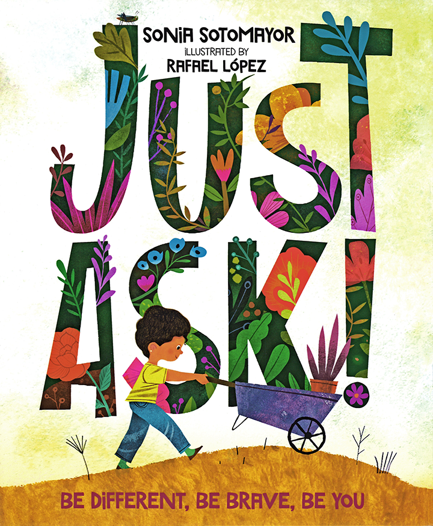

Supreme Court Justice Sonia Sotomayor shares an inspiring story celebrating how people’s differences make the world as beautiful and magical as a garden in bloom.
“A hopeful and sunny exploration of the many things that make us unique [with] dynamic and vibrant illustrations [that] emphasize each character’s unique abilities. . . . A thoughtful and empathetic story of inclusion.” —School Library Journal
A #1 New York Times Best Seller!
Hooks
Build Background
Justice Sonia Sotomayor uses the metaphor of a garden to develop the theme of celebrating differences. Use the links below to introduce and discuss the garden metaphor. Preview all links and content before sharing with students.
In this video tour, there is no narration, just accompanying music. Set a purpose for viewing by encouraging students to jot down ways in which the various flowers and plants in the garden are similar to and different from each other, for example by size, color, or shape.
Ask: How are the flowers and plants in this garden similar? How are they different? How do the different flowers and plants contribute to the garden’s beauty?
In this video, Rachel guides a tour of her family’s vegetable and herb garden. To support active viewing, tell students to listen for and jot down as many of the vegetables, herbs, and flowers mentioned in the video as they can.
Ask: What are some of the different plants you saw in Rachel’s garden? How might Rachel need to care for different plants in different ways?
Disclaimer
By clicking on links and/or navigating to URL addresses, you will be leaving the Savvas Now™ program and entering into an external website (third party) that may contain content or …Learn More
Introduce the Big Question
Why is it important to celebrate our differences?
Write the Big Question on chart paper and tell students they will explore this question as they read Just Ask! Be Different, Be Brave, Be You.
To spark ideas, ask students to think about interesting qualities, interests, or abilities that describe themselves and write three ideas on sticky notes. Prompt students by sharing some thoughts of your own, such as “I am left-handed,” “I like riding my bike,” or “I can speak two languages.”
Have students work with partners to compare and contrast their ideas. Pairs can place their sticky notes in a Venn diagram such as the one below to show how they are different from each other and how they are alike. If partners do not find something they have in common, have them discuss their qualities, skills, and interests until they uncover some ways in which they are similar to add to their diagram.
[SPEC: Create a Venn diagram of overlapping ovals, as shown above. Left oval should have a head “Partner 1”; the far right oval should have a head “Partner 2” In the middle/overlapping section, please show the borders of both ovals to create a text field. Inside, show head “Both”. Place the bulleted text as shown above in each section of the diagram.]
Then have partners share their diagrams and ideas with the whole class. Use sentence frames such as the ones below to support discussion:
Something I have in common with my partner is ________ .
One way that I am unique is ________ .
One way my partner is unique is ________ .
Tell students to keep these ideas in mind as they explore the Big Question throughout the lesson.
Mirrors & Windows
Celebrating Our Differences
Explain that in the story, students will meet several characters who have both similarities and differences. Review some of the examples of differences that student pairs listed in their Venn diagrams. Then have partners discuss how people’s unique qualities—how we are different—can make the world a more interesting and fun place to live in. Prompt them with sentences frames such as the following:
No two people are exactly the same because ________ .
If everyone were the same, ________ .
I think our differences make the world interesting because ________ .
Write About It!
Journal After students have discussed in pairs, display the sentence frame below and have students respond in their journals. Explain that students will revisit their responses after they read each part of the story and learn about each character's experience.
To me it is important to celebrate our differences because ________ .
Author’s Craft
Text Structure
Sonia Sotomayor has used a distinct text structure to support and reinforce important ideas and messages. After the opening letter, the story follows a predictable pattern in which a question links each character to the previous character. Use the Activity Support to guide students in uncovering how Justice Sotomayor organizes her ideas and uses text structure to help convey important messages.
Disclaimer By clicking on links and/or navigating to URL addresses, you will be leaving the Savvas Now™ program and entering into an external website (third party) that may contain content or…Learn More
Summary
The book begins with A Letter to the Reader from the author. Justice Sonia Sotomayor explains that as a child with juvenile diabetes, she often felt different because of her medical condition. She notes she wrote the book to explain how differences such as hers make us stronger in a good way, and she encourages readers to “just ask” if they ever wonder why someone is doing something different. After the author’s letter, we meet Sonia, who explains that she and her friends are planting a garden. She notes how kids, like flowers and plants in a garden, are all different, each with a special characteristic and each growing in his or her own way. Sonia explains that she must take insulin to be healthy. Then we meet two other children: Rafael, who has asthma and uses an inhaler to be healthy, and Anthony, a boy who cannot walk and gets around “super fast” in a wheelchair.
REMINDER: This book does not include page numbers. This section of the book starts on the dedication page 1⁄M , page 1⁄M and ends on page 11.
Hooks
Build Background
Before students read the first part of the book, share the links below to build background. Tell students that the author, Justice Sonia Sotomayor, is the first Latinx person to be a Supreme Court Justice, or judge. Justice Sotomayor grew up with a medical condition called diabetes, which students will learn about in the book and video. Preview all links and content before sharing with students.
What Is Diabetes?
(length: 1:56)(length: 1 colon 56)
To locate the video, copy and paste the URL into your browser:
https://youtu.be/sm7oLG1wkwE
In this video, cartoon characters explain juvenile diabetes (also called Type 1 diabetes), the condition that Sonia Sotomayor lives with. To support active viewing, have students record two or three facts about Type 1 diabetes as they watch.
Ask: What facts did you learn about juvenile diabetes? Why might a child with diabetes feel different from children that do not have diabetes?
In this video, Justice Sotomayor tells a group of children about a time when she had to give herself an insulin shot in a restroom. As students view the video, have them watch closely for Justice Sotomayor’s explanation of how this experience led her to write Just Ask! Be Different, Be Brave, Be You. Have students make notes about that and any other questions they have as they view the video.
Note that Justice Sotomayor references the term “drug addict” in the video. Support students as needed with the meaning of this term.
Ask: How did Sonia Sotomayor’s diabetes inspire her to write this book?
Mirrors & Windows
Discuss the three children in this section of the book: Sonia, Rafael, and Anthony. How are they similar? How are they different? Now, have students think about how these characters might be mirrors (a reflection of their own experiences), windows (a view into another’s experience) or both. Use the questions on pages 6, 8, and 11 to prompt discussion.
Do you ever need to take medicine to be healthy? (page 6)
Do you use a tool to help your body? (page 8)
How do you get from place to place? (page 11)
Have student pairs pick one question and discuss the answer. As needed, share ideas from your own point of view, such as, “When I have a cold, I take cold medicine to feel better so that I will be healthy.”
Write About It!
Journal Display the sentence frame below and have students write about their ideas and experiences.
The character I relate to the most is ___________ because ___________ .
*Point out that to relate to someone else is similar to seeing/finding things that you have in common with that person. Students can refer to their Venn diagrams from Before Reading for examples of things they have in common with someone else. Display student exemplars for students to use as guideposts with their writing.
Student Exemplars:
“The character I relate to the most is Sonia because I like to talk about my friends and how our differences make us special.”
“The character I relate to the most is Rafael because I like to draw pictures.”
Flexible Group Activities
To maximize student performance, use flexible grouping options that best meet your instructional goals and your students’ needs.
Journal Share
Have students share and discuss their journal entries about which character in this part of the story they relate to the most and why.
Author’s Craft: Text Structure
Remind students that an author organizes the text in a book to help readers follow the most important ideas. Have partners discuss and analyze the author’s use of questions as part of the book’s text structure. Instructions are included in the Activity Support.
Summary
In this part of the story, the reader meets seven more children. Madison and Arturo are blind and get around with the aid of a guide dog and a cane. They note how they strengthen their other senses to notice things other people may miss. Next comes Vijay, who is deaf. Vijay communicates with sign language and explains that he loves to read and write. Bianca, who has dyslexia, explains her condition, and notes that she’s very good at making art from pictures in her mind. Jordan and Tiana both have autism. Jordan’s autism makes him very good at counting and organizing his toy dinosaurs, which he loves to talk about. Tiana, however, doesn’t talk. Finally, the reader meets Anh, who speaks with a stutter. Anh explains she is a very good listener because listening comes more easily to her than talking.
REMINDER: This book does not include page numbers. This section of the book starts on page 12 and ends on page 21.
Hooks
Make Connections
Rafael López is an award-winning artist of books for children. López worked closely with Sonia Sotomayor to create this beautiful book. The video shows López’s acceptance speech for the 2020 Schneider Family Book Award for Young Children. Share the video to introduce the illustrator and help students focus more deeply on the illustrations in the book. Preview all links and content before sharing with students.
Rafael López Schneider Family Award Acceptance Speech
To locate the video, copy and paste the URL into your browser:
https://vimeo.com/503614330
(length: 1:59) (length: 1 colon 59)
In this online speech, the illustrator Rafael López shares his thoughts about Just Ask! Be Different, Be Brave, Be You and its themes. He mentions his personal connection to the topic—he had to manage his own dyslexia as a child, and his son Santiago has high functioning autism. Set a purpose for viewing by asking students to record two to three interesting things that they notice or wonder about Rafael López as they view the video.
Once students have viewed the video, discuss Rafael López’s contribution to the book. Encourage students to refer to their notes during the discussion.
Ask: How is Rafael López’s personal connection to the book similar to Sonia Sotomayor’s?
Mirrors & Windows
The Illustrator’s Craft
In the second part of the story, Sonia Sotomayor introduces seven more children. The text explains each child’s condition, and Rafael López’s imaginative illustrations play an important part in supporting readers’ understanding of the text. Remind students of the video of Rafael López’s speech. Point out that López says that tough challenges are put in our way not to stop us but to call on our courage to “be all we can be.”
Ask students to think of challenges that have required them or someone they know to be brave in order to “be all you can be.” Have students write in their journal explaining the challenge and how courage helped them overcome it.
As needed, explain that “be all you can be” means to do your best and use your abilities in the best way possible.
Write About It!
Journal Use the sentence frames below to write about challenges.
A challenge /I / someone I know/ had was __________ . __________ showed courage to deal with this challenge by __________ . This helped __________ be all /I / he / she/ can be because __________ .
If students need more prompting, work together to review the types of challenges that the children in the story have and how they use courage to deal with their challenges. Then discuss examples of other challenges that they or people they know have had and how they used courage to deal with them.Display student exemplars for students to use use as guideposts with their writing.
Student Exemplars:
“A challenge I had was when I broke my arm. I showed courage to deal with this challenge by working hard to make my arm strong again. This helped me be all I can be because I learned that hard work will help me overcome challenges.”
“A challenge I had was when I struggled to learn how to speak another language. I showed courage to deal with this challenge by being brave to try to speak even when I made mistakes. This helped me be all I can be because I learned how to learn from my mistakes.”
Flexible Group Activities
To maximize student performance, use flexible grouping options that best meet your instructional goals and your students’ needs.
Revisit the Big Question
Give students time to think about the Big Question as it relates to this section of the story. Display the sentence frame from the Before Reading journal activity and encourage students to add ideas and revise their responses based on the characters that they met in this part of the story. This can be done individually or in pairs.
Journal To me it is important to celebrate our differences because ___________ .
Analyze an Image
Have students analyze the image on pages 20–21. Have students start by working with partners to generate questions that they have about the illustration. Encourage partners to consider each other’s question ideas and to make suggestions to build on and refine each other’s questions. Additional instructions are in the Activity Support.
Summary
The last section begins with Julia, who has Tourette’s syndrome. Julia explains that she often wiggles and makes sounds, which makes people look at her funny. She feels frustrated at times when she tries to explain her condition to people, but notes that explaining it helps. Manuel has attention-deficit/hyperactivity disorder (ADHD) and feels frustrated when he has to sit still. It helps him when teachers or friends are patient with him. Next comes Nolan, who is allergic to nuts. He explains he has to be very careful not to eat nuts, and he uses his voice to tell people about his allergy in order to stay safe. Finally, Grace introduces herself. Grace was born with Down syndrome. She explains she can do almost anything other kids can do, although it takes her time to learn new things. The book returns to Sonia, who stands in the completed garden with all her friends. Sonia wonders what their garden would be like if all of the plants were exactly the same. She ends by explaining that each of us—the children in the book and the reader—has unique powers to share, which make the world a more interesting and richer place.
REMINDER: This book does not include page numbers. This section of the book starts on page 22 and ends on page 31.
Hooks
The following video is a child’s book report of Just Ask! Be Different, Be Brave, Be You. Share the video with students to get them thinking and talking about the main themes in the book.
Before playing the video, have students set a purpose for viewing. Ask them to think about the important ideas in the book and how the girl giving the book report, Jenisha, uses her own words to talk about these ideas. Students should record two to three interesting things that they notice or wonder about the book report as they view the video. Preview all links and content before sharing with students.
After viewing, discuss what students wrote in their notes. Ask students to name new ideas Jenisha had or ways of talking about the book that surprised them.
Ask: Are there ideas or details from the book that Jenisha left out? Should she have mentioned them? Why? What would you add to her review if you were helping Jenisha record this video?
Mirrors & Windows
Remind students that the characters in this story might be mirrors (a reflection of their own experiences), windows (a view into another’s experience), or both. Then students consider the unique powers that the children have in Just Ask! Be Different, Be Brave, Be You. Have partners choose one or two of the children to discuss. Prompt them with the following questions:
What is each child’s unique power?
How does each child share his or her power with the world?
What do you like or admire about these children and the powers they have?
Remind students that the book ends with this question: “What will you do with your powers?” Ask students to think about how they would answer this question. Have them identify their unique powers and think about what they might do with those powers.
Write About It!
Journal Display the following sentence frames and have students write about their own unique powers:
My unique power is _______ .
I will _______ .
Flexible Group Activities
To maximize student performance, use flexible grouping options that best meet your instructional goals and your students’ needs.
Analyze the Illustrator’s Craft
Have student pairs or small groups analyze and discuss Rafael López’s use of animal characters in the illustrations throughout the book. Students will first discuss the animal images in small groups and then come together for a whole group discussion. Instructions are included in the Activity Support.
Unlock a Key Sentence
Display and read aloud the following key sentence from Just Ask! Be Different, Be Brave, Be You:
Just like in our garden, all the ways we are different make our neighborhood—our whole world really—more interesting and fun.
Guide students in unlocking the layers of meaning conveyed in the sentence using the protocol included in the Activity Support.
Reflect on the Big Question
Why is it important to celebrate our differences?
Remind students that on page 30, Sonia ends her story with these words: “And just like all of these plants, each of us has unique powers to share with the world and make it more interesting and richer.”
Have pairs of students reread this sentence and discuss how it relates to the Big Question. Then have partners return to the Venn diagrams that they completed in Before Reading. Have partners discuss how their unique qualities might also be powers that they can share with the world. Ask students to share two things that they might consider unique powers with the rest of the class. On chart paper or the board, compile a list of students’ ideas and discuss the ways in which students’ differences/unique qualities make the world more interesting and are important to celebrate.
Mirrors & Windows
Celebrating Our Differences
Have students think about the characters in the book and how they are mirrors (a reflection of their own experience), windows (a view into another’s experience) or both.Point out that students have just listed examples of their differences (or unique abilities/qualities) when they reflected on the Big Question.
Write About It!
Journal Display the sentence frames below and have students write about a unique power that makes them different.
Tell students to choose one of their own unique qualities (or “super powers”) and reflect on how it “mirrors” a quality (or “super power”) of one of the characters. Then have students think about a character who is a window for them. How did learning about this character help them gain a better understanding about people’s differences? Have students respond in their journals using the sentence frames below.
(Character’s name) unique power makes the world more interesting because _______. The unique power that makes me different is _______ because _______..
To me it is important to celebrate our differences because _______.
Project-Based Learning Ideas
Why is it important to celebrate our differences?
Have students choose one of the project ideas below. Allow students to choose other project ideas as long as the ideas attempt to answer the Big Question. Then distribute the Project Template and Project Rubric to students.
Project-Based Learning Ideas
Write a Letter to a character in the book. Tell the character what you admire about her or him and ask questions to learn more.
Create a Just Ask! Superhero based on your own “power.”
Plan a Garden Have partners work together to research and plan a virtual garden.
Project Template
Have students fill out the project template. Assist students in finding resources to guide their project. The Project Template is available to assign, download, or print from the table of contents for this lesson in Savvas Now.
Project Rubric
Review the 4-Point Project Rubric with students. Discuss each category with students. The Project Rubric is available to assign, download, or print from the table of contents for this lesson in Savvas Now.
Share & Celebrate
Preparing to Present
Provide time for student pairs to practice their presentations, reminding students that each partner should have a significant role in presenting their project. Partners should work collaboratively and follow agreed upon rules, norms, and protocols. Review the 4-Point Project Rubric with students so they understand how they will be assessed.
Explain that students can strengthen their presentations by incorporating different types of media, such as photographs, drawings, and videos. Model how to present orally.
When I present, I make eye contact with the audience. I don’t keep my eyes down.
As I speak, I make sure everyone in the room can hear what I am saying.
I pronounce each of my words clearly and correctly.
I do not rush through my presentation, but speak clearly and at a natural pace.

Title:Just Ask! Be Different, Be Brave, Be You
Author:Sonia Sotomayor
Illustrator:Rafael López
Genre:Picture Book
Lexile:710L
Page Count:32
Publisher:Philomel Books; Illustrated edition
Copyright:2019
Text Also Includes: Author’s Note
Disclaimer By clicking on links and/or navigating to URL addresses, you will be leaving the Savvas Now™ program and entering into an external website (third party) that may contain content or…Learn More
Plot Overview
Sonia and thirteen friends are planting a beautiful garden. Each child has a physical or medical condition that gives her or him a unique way of participating. The book begins with A Letter to Readers, in which the author, United States Supreme Court Justice Sonia Sotomayor, explains her message—that our differences make us stronger in a positive way.
After the author’s note, we meet young Sonia, who introduces herself and her own unique condition—juvenile diabetes. Sonia explains that like the many different plants and flowers in a garden, people are all different, too.
Sonia then introduces her thirteen friends, each with her or his own unique condition. Along the way, the characters use questions to learn about each other and their special “powers.” They also learn the importance of being brave enough to “just ask” when curious about things we don’t understand. The story ends with all the children celebrating themselves and the beautiful garden they have created together.
Note: This book does not include page numbers. For this lesson, the first page of the story is page 4, the left-hand page immediately following A Letter to Readers.
Theme Overview
Understanding and Celebrating Our Differences Justice Sonia Sotomayor explains that her purpose for writing Just Ask! Be Different, Be Brave, Be You was to show “how our differences make us stronger in a good way.” Starting with her own childhood diagnosis of diabetes, Justice Sotomayor introduces the reader to thirteen children, each living with a medical or physical condition, including diabetes, asthma, blindness, autism, and ADHD. The conditions are described without judgment, and each child is celebrated for the unique strengths, or “powers,” that come from living with her or his condition.
Justice Sotomayor uses the extended metaphor of a garden to reinforce the theme of celebrating differences. In the story, Sonia points out that gardens are “magical places” with thousands of different plants growing and blooming together. Each plant has its own unique qualities and requirements to help it grow and thrive—just like the children who help Sonia plant the garden. The metaphor is reinforced by Rafael López’s vibrant illustrations.
Bravery in Curiosity Justice Sotomayor sums up another central message in the book with, “If you ever wonder why someone is doing something different from other kids, Just Ask.” The author encourages young readers to speak up when they are curious about another person’s unique situation. Rather than remaining silent and making assumptions, kids should be brave and “just ask” questions. Sonia does point out, however, that people should be thoughtful with this approach, because “Not everyone is comfortable answering questions about themselves.”
Sensitivity Issues
Discussing People with Disabilities Justice Sotomayor carefully avoids the terms “disabled” and “disability,” and instead uses the term “conditions.” As such, be sensitive to your own choice of words when discussing the story. The “differences” that Justice Sotomayor describes are not in relation to a particular idea of “normal”—instead they refer to the ways in which each child, including the reader, is unique and powerful.
Please note that some of the conditions may be unfamiliar to students. Consider providing short videos or other resources to build students’ background knowledge. In these discussions, try to mirror the author’s care and sensitivity in presenting the conditions with positive, inclusive language. The following article on language for discussing or writing about people with disabilities provides some guidance on this topic: Disability Language Guide.
Disclaimer
By clicking on links and/or navigating to URL addresses, you will be leaving the Savvas Now™ program and entering into an external website (third party) that may contain content or resources for adults. Savvas Learning Company® does not guarantee, approve or endorse the content, resources or products available at these websites, nor does a link indicate any association with, or endorsement between third party and Savvas™. The linked website has its own legal terms, policies, privacy policy and community guidelines, which we recommend that you review before supplying information to the websites or their products and services. Savvas™ does not control these third party websites and is not responsible or liable for the performance of these websites, their services, accessibility features or any other content and resources contained on them.
Activity Support
Four Corners: What Makes Me Proud?
The Four Corners activity asks students to reflect on different examples of things that make people feel proud. Use this activity as a warm-up for exploring ideas of pride in The Proudest Blue.
1. Post one of the four examples in each corner of the room. Include a visual for each example.
Helping to make a special food for a family or community celebration
Working hard to create a beautiful drawing in art class
Watching a friend or family member play well in a sport
Supporting a friend who is being picked on by bullies
2. Read aloud each example and tell students to think about how it reflects (or does not reflect) things that make them feel proud. Have students discuss each example with a partner. Provide the following sentence frame to support discussion:
This would / would not make me feel proud because ________ .
3. After discussing each example in pairs, tell students to move to the corner of the room displaying the example that would make them feel the proudest. Remind students that “proudest” means “the most proud.”
4. Give students time to discuss the example they chose in groups. Encourage students to share similar situations that made them proud. Provide the following sentence starters to support discussion:
This example would make me feel the proudest because ___________ .
It reminds me of a time in my life when ___________ .
5. Have a student from each group summarize their group’s discussion. Then guide students in a whole-class discussion.
Activity Support
Text Structure
Explain that students are going to preview the book to identify how the author organizes the text. Explain that the way a text is organized is called text structure—the order and way the author chooses to share important ideas about a topic.
1. Flip through the first few pages of Just Ask! Be Different, Be Brave, Be You, pausing to point out the following patterns found throughout the text:
most of the pages start by introducing a new character
the character’s name is written in a different color
many of the pages end with a question—often written in bigger letters or set apart from the rest of text
2. Tell students to look for these features as they read and ask themselves, How does the text structure support important ideas and messages from the author?
Activity Support
What Makes A Day Special?
After students have recorded 1—5 words about a time when they felt special, have them turn and talk with a partner to discuss the question: What makes Faizah and Asiya feel special about their first day of school?
Have students think about the question and then discuss their ideas with a partner. Encourage each partner to write a sentence or two summarizing their partner’s ideas about the topic.
Then have student pairs come together to discuss their answers with the rest of the class.
Finish the discussion by asking students to consider how the things that make them feel special are similar to or different from the things that make Faizah and Asiya feel special. Encourage students to refer to their sticky notes.
Talk about something in your life that makes you feel special. For example, “I feel special when someone tells me I’ve done a good job because it makes me feel proud about my work.” Use guiding questions to support ideas and discussion.
What is something that makes you feel special at school or at home? Why?
How is this similar to or different from what makes Faizah and Asiya feel special on their first day of school?
Activity Support
Figurative Language: Simile, Metaphor, and Personification
On the chart-paper, display the sample sentences in a table such as the following. Underline the words “like,” “tiger,” and “yelled” as shown. Leave extra space in each row below the examples to show where students will write additional examples from the text as they read the story.
Simile
Josh jumped at the ball like a tiger.
Metaphor
Josh was a tiger on the soccer field.
Personification
Josh’s alarm clock yelled at him to wake up.
1. Have students think about the example sentences, and then turn and talk about them with a partner. Use the following questions to prompt discussion.
What images come to mind when you read these sentences?
What do the descriptions make you wonder about Josh and his alarm clock?
What kind of comparisons do these examples make?
2. After pairs discuss their ideas, facilitate a whole class discussion. Use the examples in the table to review the following key ideas:
Figurative language uses comparisons to describe something.
Similes use the words “like” or “as”; metaphors and personification do not.
Similes and metaphors compare things that have similar qualities.
Personification gives qualities of people to things that are not people.
3. Point out that in figurative language the meaning is not literal (Josh is not really a tiger). Figurative language compares two or more things because they share similar qualities (Josh plays sports with the quickness of a tiger).
4. Display the table on the chart-paper as an anchor chart throughout the lesson and have students refer and add to it as they read.
5. Explain that Ibtihaj Muhammad uses a number of these types of figurative language throughout The Proudest Blue and that students can record these examples in their own charts as they read the story.
Activity Support
Analyze an Image
This activity asks students to consider the illustrator’s contributions to the book by focusing on the illustration on pages 20–21.
1. Have students come together with the class and share their questions about the illustration. Write at least one question from each student pair on the board.
2. Then use the questions to discuss the illustration.
3. As you continue the discussion, focus in on the following types of details:
how the illustrator chooses to show Anh’s shyness and reluctance to talk
How might it have been challenging for the illustrator to show that Anh has a stutter?
how the illustrator continues the story about planting the garden in the background
What are the other characters doing to help plant the garden?
how the illustrator shows characters introduced in previous sections participating in the planting
How are Anthony and Tiana helping partners work on the garden?
4. Discuss how many of the details on this page are not in the text—the illustrator has added his own details to deepen the story and make it more interesting and fun to read.
5. Finish by asking students to draw a picture of a new detail that they might want to add to this illustration. Give students time to make their drawings. Then ask students to share their drawings with the class.
Activity Support
Analyze an Image
This activity asks students to analyze the illustration across pages 10–11. If there are not multiple copies of the text available, project or display the illustration for everyone to see.
1. Have students work with partners or small groups to write as many questions about the illustration as they can. Distribute notecards and tell students to write their questions on notecards (one question per card). To prompt ideas, share questions such as the following: Why is Asiya so big? Why is her hijab part of the sky?
2. Have groups share their questions with the class. Collect the cards and sort them into categories of similar questions, such as Questions About the Colors, Questions About the Character, and Questions About Supporting the Text. Then have students pick questions from each category and discuss the answers.
3. After discussing, tell each student to write a sentence that explains what the illustration shows about Faizah’s feelings about Asiya and her hijab.
4. Have students share their sentences with their partner or group. Provide the following sentence frames:
The illustration shows _________ . This helps me understand that _________ .
Activity Support
Text Structure
This activity asks students to analyze the way the author has used questions to the reader as part of the text structure.
1. Have students work with a partner to look at the first two questions to the reader: “Do you ever need to take medicine to be healthy?” (page 6) and “Do you use a tool to help your body?” (page 8)
2. Ask partners to notice how these questions are answered in the next part of the story. Have pairs look for answers to the first two questions. (Rafael answers Sonia’s question: “I take a break and use an inhaler with medicine”; Anthony answers Rafael’s question, “I use a wheelchair to get around.”)
3. Have partners consider why the author uses the questions this way. Ask students how this way of organizing the text supports one of the author’s key messages “I hope too that you will recognize what we have in common.”
4. Finish the activity by having partners create a flowchart that shows how the characters are linked by the questions. Explain that they can add to their flowcharts as they read more questions and find the answers.
Activity Support
Unlock a Key Sentence
Display and read aloud the key sentence. Then guide students in unlocking its meaning by discussing each sentence chunk using the protocol described below.
Start with the sentence chunk that tells who or what the sentence is mostly about. Continue to unpack meaning and connect ideas, chunk by chunk, using the guiding questions in the table below.
Just like in our garden, | all the ways we are different | make our neighborhood | —our whole world really— | more interesting and fun.
Sentence Chunk
Discuss Meaning
all the ways we are different
-What is this sentence about? (the ways we are different)
-Who is the speaker? (Sonia)
-Who is the “we” Sonia is speaking about in this sentence? (all the characters in the book as well as the reader and all people in the world)
-What does Sonia mean by “all the ways”? (not just the special conditions or abilities that the kids in the book have, but every way that all people may be different from each other)
make our neighborhood more interesting and fun.
-Whose neighborhood is this? (the neighborhood where the kids in the book live)
-Why are the words “interesting” and “fun” used together? (They are both adjectives that describe things in positive ways.)
-How is “fun” different from “more interesting”? (“fun” is more about enjoying something for pleasure; “more interesting” suggests being curious and wanting to learn more)
-Why might it be a positive thing to make a neighborhood “more interesting and fun”? (The neighborhood would be a place where people are learning and enjoying themselves.)
—our whole world really—
-What do the two dashes show? (The text inside them is additional; it adds to the idea before it.)
-What is the added idea? (that the differences don’t just impact the neighborhood but our whole world—all of society and everyone in it)
-Why did the author add the word really? (It means “truly,” and shows how important the idea is for the whole world. It adds emphasis.)
-Why would all the ways we are different be worth celebrating all over the world? (because throughout the world everyone is different in their own way which is actually something that we all have in common)
Just like in our garden,
-What is “our garden”? (the garden that Sonia and her friends have planted)
-What do the words “Just like” do? (signal a comparison)
-What comparison is Sonia making? (comparing people and their differences to a garden with different flowers and plants)
-Why do you think the author begins the sentence with this? (to emphasize the garden comparison)
Activity Support
Unlock a Key Sentence
Display and read aloud the key sentence. Then guide students in unlocking its meaning by discussing each sentence chunk using the protocol described below.
Start with the sentence chunk that tells who or what the sentence is mostly about. Continue to unpack meaning and connect ideas, chunk by chunk, using the guiding questions in the table below..
“It is a valiant and agonizing struggle | to focus. | not on what you have lost . . . but | on what you have been given.”
Sentence Chunk
Discuss Meaning
It is a valiant and agonizing struggle
-What is this sentence mostly about? (a struggle) -What is a struggle? (a challenge, difficulty, or fight) -What kind of struggle is it? (valiant and agonizing) -What does valiant mean? Point out the Spanish cognate valiant for Spanish-speaking students. (brave, heroic) -What does agonizing mean? (painful, difficult) -What does it mean if a struggle is both valiant and agonizing? (It is difficult but heroic; it is worth the challenge.)
to focus
-What does to focus mean? (pay attention to, concentrate on) -What does the sentence say to focus on? (We don’t know yet; let’s look in the next chunks.)
on what you have been given
-What does this chunk tell us about “focus”? (This is what to focus on: what you have been given.)
-What kinds of “gifts” might the authors want people to focus on? (gifts such as love, kindness, faith, school, and support from friends and family)
not on what you have lost…but
-What does this chunk tell us about “focus”? (This is what not to focus on: what you have lost.) -Why might a refugee focus on what he or she has lost? (Refugees often lose so much: their homes, family members, friends, school, jobs, and toys and other belongings. It can be hard to focus on anything else.) -How do not and but work together in this sentence? (They show a contrasting relationship between two ideas: not this, but that.) -What ideas are being contrasted in this sentence? (Ideas about what to focus on: not what you have lost but what you have been given.)
-Why might this be a good message for everyone to focus on? (It helps us to appreciate what we have and not dwell on what we do not.)
After unlocking the key sentence, have students craft their own sentence using the following sentence frame:
It is a/an __________ struggle to focus not on __________ but on __________ .
Activity Support
Analyze the Illustrator’s Craft
This activity asks students to discuss and analyze the animal characters in many of the illustrations throughout the story, starting with the dedication page (page 2). If there are not multiple copies of the text available, project or display the illustration for everyone to see.
1. Ask students to think about the animals in the illustrations in the book. What did they notice about the animals? What did these details make them wonder about the world of the story?
2. Divide students into three groups. Assign a section of the text to each group: pp. 2–11, 12–21, and 21–31.
3. Have students use these sentence frames to discuss the animals in the illustrations with their group. Students can write down their ideas.
We notice _____ .
We think ____ .
We wonder ____ .
4. Then have the groups come together and discuss all three sections, using the following guiding questions:
What were the animal characters in each part of the book? What were they doing? (a rabbit; dragonflies, butterflies, a cricket, and other insects; birds, including an owl; a dog; and a squirrel. The owl was winking at Julia; the squirrel was offering Nolan a nut. The other animals were watching the kids.)
How did the children in the book interact with some of the animals? (Example: Sonia stares at the rabbit. Julia winks back at the owl. It is as if the animals understand and appreciate the children and their garden.)
Why do you think the illustrator added the animal characters, since they are not mentioned in the text? (Sample answer: The animals are like quiet friends who appreciate the children, whatever the children’s differences are.)
What do the animal characters show you about appreciating and celebrating people with differences? (The animals accept the children for who they are.)
5. After discussing, tell each student to write a sentence that tells why they think the illustrator chose to add animal characters in this book.
6. Have students share their sentences with their partner or group. Provide the following sentence frames:
Rafael López's use of animal characters adds to the story by ______ . The animals show _________ about people’s differences.
Activity Support
Create a Just Ask! Superhero
Tell students that they are going to identify a “superpower” of their own—similar to those of the kids in Just Ask! Be Different, Be Brave, Be You. Then they will create a superhero character based on that superpower.
Have partners discuss the answer to the last question in the book: What will you do with your powers? (Students may have already written an answer to this in their Journals.)
Have each partner identify a power of his or her own on which to base a superhero character. Have students name their superpower and describe it.
Then have students come up with a superhero name based on that superpower. Give a few examples of how that might work for the children in Just Ask! Be Different, Be Brave, Be You. For example, Jordan might be Dinosaur Boy, with the special power of being able to count and talk about toy dinosaurs. Julia might be I Hear Ya Girl, with the special power to listen and hear things.
After students have named their superhero, have them design a uniform for the superhero and draw a picture of themselves wearing the uniform.
Have students present their drawings to the class and describe their superhero’s “superpower.”
Activity Support
Plan a Garden
Tell students that they are going to plan their own gardens as a celebration of differences. Students can create their garden either by cutting/pasting or drawing images of plants, or by using an online garden planning app. If students use an online app, you will want to set up their access and supervise their use.
Have partners identify a number of different plants that they want in their garden. Students can research different plants online.
Have partners make notes about each plant: What does the plant look like when full grown? What does the plant need to grow? How much light? Soil? Water? Food?
Then have pairs draw the plants or find images of the plants online to print.
Have partners cut out the images and arrange them to create a “garden” on poster paper.
Students can list the different characteristics and care needs for each plant in a table to go with their garden display.
Have partners present their gardens and explain why they picked each plant, how the plants are different from each other, and how each plant grows in its own way.
Activity Support
Author’s Craft: Personification
Have students work with partners to discuss the pictures they drew earlier.
1. Discuss students’ examples of non-human movie or TV characters with human-like qualities. Some suggestions: a rat that can talk, read recipes, and cook in a kitchen; a teakettle or candlestick holder that can sing. If possible, share online cartoons in which nonhuman objects or characters act like people.
2. Ask students to describe how the characters acted like humans. What human qualities did they have?
3. Remind students that in written stories, authors often describe nonhuman objects by giving them human qualities, such as laughing or speaking. Remind them that this is called personification.
4. Ask student pairs to identify an example of personification on the last two pages of the story. (30–31; Asiya’s hijab says “hello with a loud wave”; it says “I’ll always be here, like sisters.”)
5. Have partners discuss why this is an example of personification. (A hijab is an object, so it cannot talk. That is a human quality.)
6. Ask students to identify what idea or image the author wants to help readers picture. (It is as if the hijab is speaking to Faizah, welcoming her and reassuring her. It shows that Asiya’s hijab is special to both sisters.)
7. Now have students write a sentence that uses personification to describe Asiya’s hijab to show that it is special.
Project Template
To assign, download, or print this resource go to the table of contents for this lesson in Savvas Now.
Name:
Book Title:
Big Question:
Project Description:
Resources:
List the resources you used to complete your project.
Big Question Connection:
Write two to three sentences explaining how your project addresses
the
Big
Question.
Reflection:
Think about the book’s characters, setting, and plot. How was this
book a
mirror for
you? How was it a window?
This text was a mirror for me because ...
This text was a window for me because ...
How might your project be a mirror or a window for others?
My project might be a fill in the blank
lines___________ (mirror/window) for others because...
Project Rubric
To assign, download, or print this resource go to the table of contents for this lesson in Savvas Now.
Score
Focus
Organization
Visuals/Media
Language
Delivery
4
The topic is clear, convincing, and effectively addresses the Big Question.
Ideas are clear and well organized.
Visuals/media are engaging, appealing, and effectively support ideas presented.
Language is clear and precise. Vocabulary is specific and appropriate.
Presenter employs appropriate eye contact, speaking rate, and enunciation.
3
The topic is mostly clear and sufficiently addresses the Big Question.
Ideas are mostly clear and well organized.
Visuals/media are mostly engaging, appealing, and support ideas presented.
Language is mostly clear and includes appropriate vocabulary.
Presenter employs mostly appropriate eye contact, speaking rate, and enunciation.
2
The topic is not always clear and only partially addresses the Big Question.
Ideas are sometimes confusing and not well organized.
Visuals/media are not always engaging and only partially support ideas presented.
Language is often vague and/or unclear. Vocabulary is overly general.
Eye contact, speaking rate, and enunciation are uneven.
1
The topic is confusing and unrelated to the Big Question.
Ideas are confusing and unorganized.
Visuals/media are not engaging and/or do not support ideas presented.
Language is vague and unclear. Vocabulary may be used incorrectly.
There is little command of presentation skills.
0
Response is unintelligible, illegible, and off topic or no response is given.
Response is unintelligible, illegible, and off topic or no response is given.
Visuals/media are unintelligible, illegible, and off topic or not included.
Response is unintelligible, illegible, and off topic or no response is given.
Presentation is unintelligible, off topic, or not delivered.